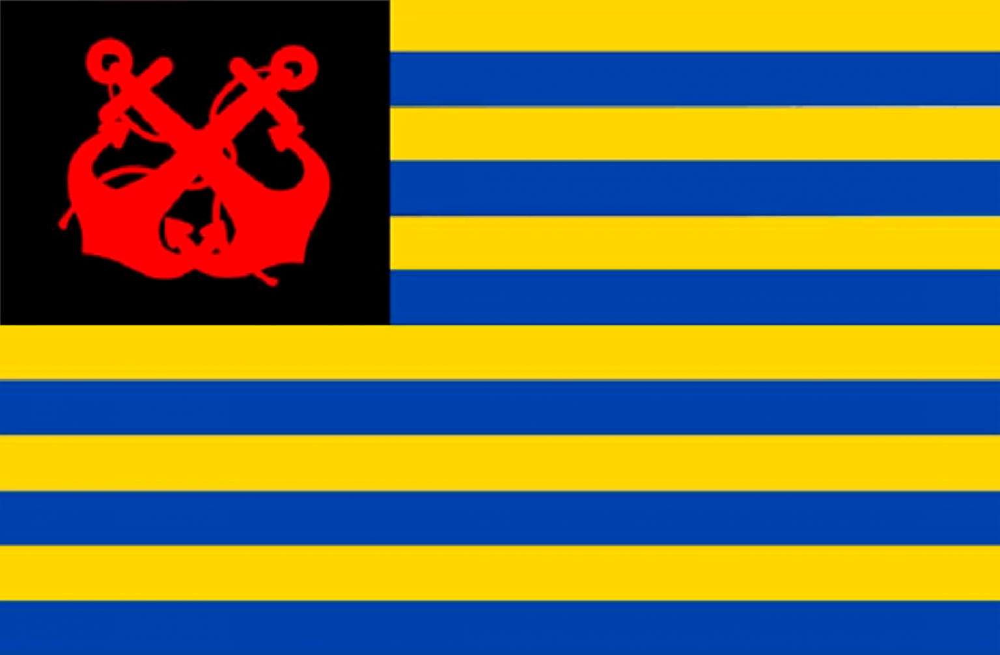
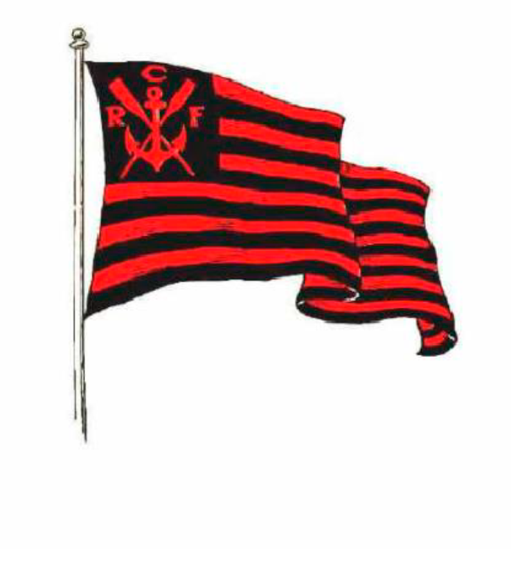
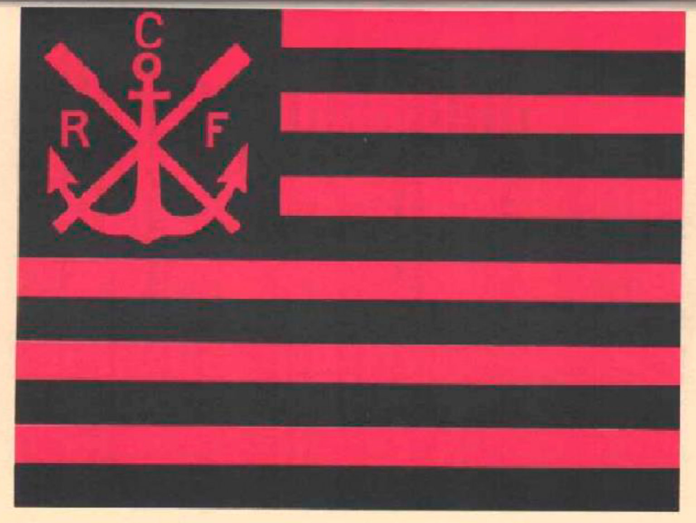
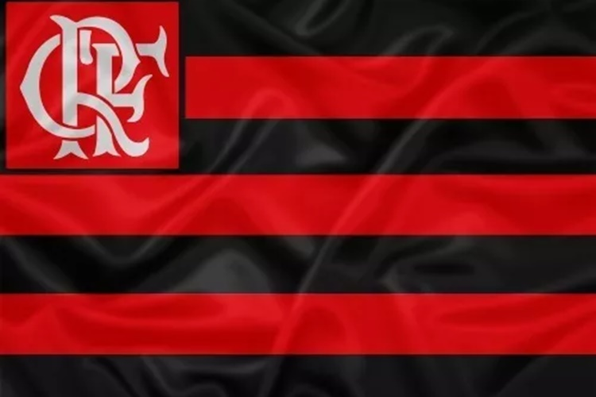

Flamengo
history_edu Do Rio para o mundo: CLube de Regatas do FlamengoO Clube de Regatas do Flamengo é um dos clubes de futebol mais tradicionais e populares do Brasil. Fundado em 17 de novembro de 1895, no Rio de Janeiro, o clube é conhecido por suas cores tradicionais, o vermelho e o preto, que deram origem ao apelido “Rubro-Negro”. Ao longo de sua história, o Flamengo conquistou diversos títulos importantes no futebol nacional e internacional. Entre suas principais conquistas estão a Copa Libertadores da América, o Campeonato Brasileiro e a Copa do Brasil. Além do futebol, o Flamengo também possui uma forte tradição em outros esportes. Sua grande torcida e sua história fazem do clube uma das instituições esportivas de maior destaque do Brasil.
whatshot Flamengo | News
by: Victor Sena IcomaAtacante foi convocado na primeira lista de Ancelotti após a Copa do Mundo de 2026 e superou as adversidades
Atacantes rubro-negros voltam a ser lembrados por Carlo Ancelotti na primeira convocação depois da Copa do Mundo
Quem será o classificado do jogo? O Independiente del Valle enfrenta o Flamengo nesta quinta-feira em busca da classificação para a próxima fase em Taça Conmebol Libertadores. Os times vão a campo no gramado do Olímpico Atahualpa a partir de 21:30h. O trio de arbitragem será composto pelo árbitro principal Facundo Tello, e pelos assistentes Cristián Navarro e Gabriel Chade. Acompanhe tudo sobre o jogo e fique por dentro dos melhores lances desse confronto.
Taça da Libertadores, conquistada pelo Flamengo em 2019, está em exposição no ES.
Outro patamar. Campeão mundial e tetracampeão da Libertadores, o futebol rubro-negro é berço de craques que encantaram - e encantam - o Brasil e o mundo. Raça, amor e talento mobilizando uma nação inteira.
Gramado ruim e últimos preparativos: veja como está o Estádio Atahualpa antes de Del Valle x Flamengo
|
 |
Segundo o estatuto de fundação do Flamengo, elaborado em 1895, a bandeira é definida por: um “pavilhão [que] será de cor azul celeste e ouro em listras largas, tendo os cantos pretos com duas ancoras vermelhas.” (Artigo 32 do estatuto de 1895) |
 |
Em 1896, com as mudanças das cores, a bandeira passa a ser rubro-negra. Em 1902, a instituição muda de nome, de “Grupo de Regatas do Flamengo” para “Clube de Regatas do Flamengo”. O estatuto de 1915 é o primeiro que estabelece a bandeira rubro-negra com o “CRF” da forma que conhecemos. Através do artigo 64 fica definido que: “O pavilhão, a flâmula, e as armas conforme o annexo n°1 e os uniformes do Club serão conforme os annexos ns. 1 e 2.” |
| A partir daí, somente em 1980, é possível observar uma pequena mudança em alguns traços na âncora, que fica mais larga, e os remos, com menos curvas em suas extremidades, ainda que a descrição das características da bandeira permaneça igual aos estatutos anteriores, sendo orientado: 12 listras largas na horizontal nas cores vermelha e preta e no canto superior esquerdo um quadrado de fundo preto com uma âncora, dois remos cruzados e as iniciais “C.R.F.”. |
 |
No ano de 2018, o Clube de Regatas do Flamengo passa por um estudo de marca que define um padrão nos símbolos do Clube, trazendo a última versão da bandeira que temos no Clube até a presente data. |
 |
Casa Inteligente e Ecosuficiente
Sua casa rede dinheiro com sustentabilidade.
Eco Energy Jardim
Um jardim de possibilidades para sua agua e reutilização de energia.